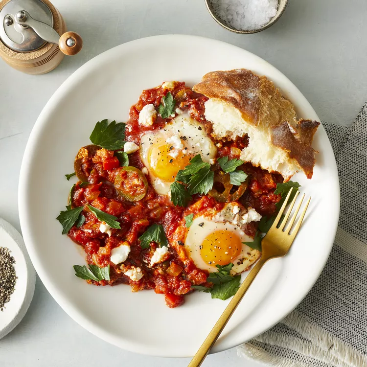

Shakshuka

Description
This shakshuka recipe is a one-dish meal that is fast, easy, and delicious. Be sure to cook the sauce until the veggies are nice, soft, and sweet. Once the eggs go in, you can finish the dish covered on the stove or pop the pan into a hot oven until it cooks to your liking. No matter how you like your yolks cooked, this makes for an impressive breakfast, brunch, lunch, or dinner.
Ingredients
- 2 tablespoons olive oil
- 1 large onion, diced
- ½ cup sliced fresh mushrooms
- 1 teaspoon salt, plus more to taste
- 1 cup diced red bell pepper
- 1 jalapeño pepper, seeded and sliced
- 1 teaspoon cumin
- ½ teaspoon paprika
- ½ teaspoon ground turmeric
- ½ teaspoon freshly ground black pepper, plus more to taste
- ¼ teaspoon cayenne pepper
- 1 (28 ounce) can crushed San Marzano tomatoes, or other high-quality plum tomatoes
- ½ cup water, or more as needed
- 6 large eggs
- 2 tablespoons crumbled feta cheese
- 2 tablespoons chopped fresh parsley
Steps
- Heat olive oil in a large, heavy skillet over medium-high heat. Add onion and mushrooms; season with salt. Cook and stir until mushrooms release all of their liquid and start to brown, about 10 minutes.
- Add bell pepper and jalapeño pepper. Cook and stir until peppers begin to soften, about 5 minutes. Season with cumin, paprika, turmeric, black pepper, and cayenne. Cook and stir to "wake up" the flavors, about 1 minute.
- Stir in tomatoes and water. Reduce heat to medium. Simmer uncovered, stirring occasionally, until vegetables are softened and sweet, 15 to 20 minutes. Add more water if sauce becomes too thick.
- Use a large spoon to make a depression in sauce for each egg. Crack an egg into a small ramekin and slide gently into an indentation; repeat with remaining eggs. Season eggs with salt and pepper. Cover and cook until eggs reach desired doneness.
- Top with feta cheese and parsley to serve.
Back to home